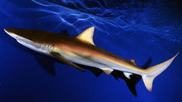

Los seláqueos (Selachii, del griego se?????, 'tiburón') son una división de peces cartilaginosos de la subclase Elasmobranchii, conocidos vulgarmente como tiburones o escualos.[2]? Se caracterizan por un endoesqueleto sin costillas, dentículos dérmicos, de cinco a siete hendiduras branquiales a cada lado, aletas pectorales que no están fusionadas a la cabeza y escamas placoides.[3]?[4]? Son el grupo hermano de la división Batomorphi (rayas y mantarrayas), formando el clado monofilético Neoselachii, también conocido como Elasmobranchii en sensu stricto.